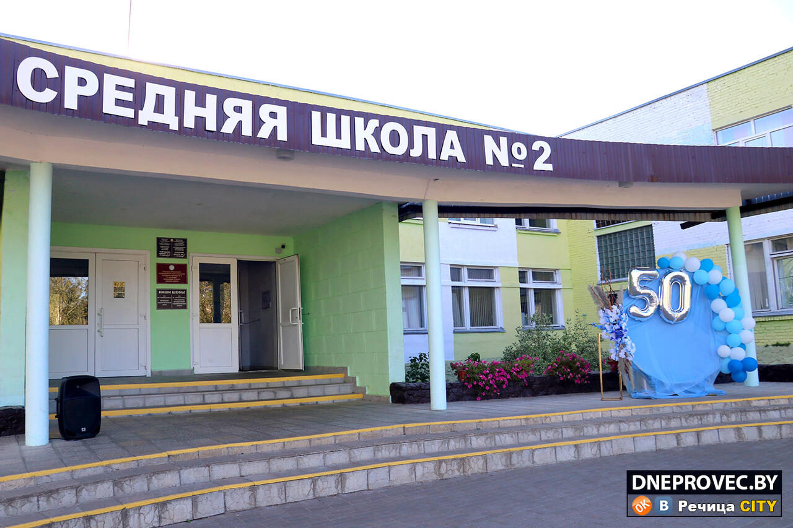

Государственное учреждение образования «Средняя школа № 2 г. Речицы»
Основные сведения
Тип учреждения: Учреждение общего среднего образования
Населенный пункт: Речица
Контактная информация
Адрес:
247500, Гомельская область, Речицкий район
г. Речица, ул. Жиляка, д. 2
Телефон (директор): +375 2340 5 56 79
Телефон (приемная): +375 2340 5 57 67
Факс: +375 2340 5 57 67
E-mail: shkola2@rechitsa-edu.gov.by
Режим работы
Понедельник – пятница: 8.00 – 20.00
Суббота: 10.00 – 20.00
Руководство
Должность
Фамилия, имя, отчество
Директор
Андреева Лариса Анатольевна
Заместитель директора по учебной работе
Гришанова Людмила Николаевна
Заместитель директора по учебной работе
Тарабей Светлана Владимировна
Заместитель директора по воспитательной работе
Козырева Елена Николаевна
Предварительная запись на личный прием осуществляется по телефону 8 (02340) 5 57 67 (приемная).
Об учреждении

Основными задачами государственного учреждения образования «Средняя школа № 2 г. Речицы» являются:
Создание условий для получения образования в соответствии с индивидуальными потребностями, возможностями учащихся на основании использования средств информационно-коммуникационных технологий.
Интеллектуальное развитие учащихся, формирование ключевых компетенций, необходимых для успешной социализации личности.
Формирование мировоззрения учащихся на основе представлений об идеологии белорусского государства, гражданственности и патриотизме.
Воспитание информационной культуры личности учащегося и учителя, умения использовать информационное пространство.
Формирование у учащихся системы социально-экономических знаний и умений творчески их применять при решении различных проблем.
Формирование активной жизненной позиции учащихся, ценностного отношения к семье.